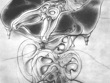
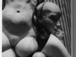
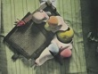

Towarzystwo Bellmer / Bellmer Society





Towarzystwo Bellmer
ul. Piastowska 1/7
40-005 Katowice
KRS: 0000018183
Regon 277606707, NIP 954-23-86-383
tel. (+48) 032 2035005
TOWARZYSTWO BELLMER zawiązało się w roku 2000 w środowisku artystycznym Katowic, chociaż część członków założycieli pochodzi z poza Śląska. Stowarzyszenie zostało zarejestrowane w Krajowym Rejestrze Sądowym 29 czerwca 2001 roku i posiada osobowość prawną.
Statutowe cele stowarzyszenia to wspieranie i upowszechnianie różnych form sztuki, a także popieranie działalności artystycznej, szczególnie nurtu nawiązującego do szeroko rozumianego światopoglądu surrealizmu i sztuki o pogłębionym znaczeniu filozoficznym poprzez pokazy, spotkania, wieczory autorskie, koncerty, prace wydawnicze, stypendia twórcze, pomoc w organizacji wystaw i innych przedsięwzięć artystycznych. Stowarzyszenie stawia sobie również za zadanie upowszechnianie wiedzy o życiu i twórczości wielkiego Katowiczanina – Hansa Bellmera poprzez wystawy, sesje naukowe, publikacje oraz inicjatywy upamiętniające jego obecność na Śląsku. Podobnie popieramy działalność badawczą dotyczącą sztuki XX wieku ze szczególnym uwzględnieniem zarówno Górnego, jak dolnego Śląska, poprzez sesje, sympozja, stypendia i prace wydawnicze.
Podczas pierwszego Walnego Zgromadzenia Towarzystwo podjęło uchwałę – propozycję nazwania roku 2002 „Rokiem Hansa Bellmera w Katowicach”, ponieważ 13 marca tegoż roku przypadła setna rocznica urodzin Hansa Bellmera, właśnie w Katowicach. Z tej okazji Towarzystwo wydało okolicznościowy plakat formatu 100×70 cm w czterech językach.
W dniach 14-15 marca 2002 roku odbyła się sesja „Wokół Hansa Bellmera” zorganizowana przez Towarzystwo Bellmer przy współpracy Biura Wystaw Artystycznych i Górnośląskiego Centrum Kultury (obie instytucje finansowane przez Zarząd Miasta Katowice). Wygłosili prelekcje i brali udział w sesji następujący autorzy: Henryk Waniek, Krzysztof Jurecki, Andrzej Przywara, Andrzej Kostołowski, Tadeusz Komendant, Agnieszka Maria Wasieczko, Marek Zieliński, Michał Sporoń, Tadeusz Sławek. Kuratorem sesji był Andrzej Urbanowicz. W dwudniowych zajęciach sesyjnych wzięło udział ponad 150 osób zainteresowanych twórczością Hansa Bellmera. Obradom towarzyszyły kameralne pokazy reprodukcji prac Bellmera. Sesja cieszyła się dużym zainteresowaniem mediów.
16 listopada 2002 została otwarta w Muzeum Śląskim w Katowicach, już druga w tym mieście (pierwsza w roku 1996), wystawa prac Hansa Bellmera zorganizowana przez I.K. Ars Cameralis Silesiae Superiors, przy współpracy Towarzystwa Bellmer. Zaprezentowano
34 grafiki i fotografie z kolekcji spadkobierców Bellmera, Państwa Jean-Marie i Doriane Bihl-Bellmer, którzy byli obecni podczas otwarcia wystawy. Pojawili się również krytycy polscy i zagraniczni marszandzi, jak Adam Boxer z Nowego Jorku czy Eric Berinson z Berlina. Na krótkiej sesji po otwarciu wystawy (na Dużej Scenie Teatru Śląskiego w Katowicach) wystąpili Krzysztof Jurecki, Michał Sporoń i Marek Zieliński. Wystawa cieszyła się wielkim zainteresowaniem mediów i nieznacznym ze strony zakłopotanych instytucji oficjalnych. Materiały z sesji i wystawy, które wraz z dodatkowymi tekstami źródłowymi (traktat Hansa Bellmera) zostaną wydane w formie publikacji książkowej.
Do Członków i Sympatyków Towarzystwa Bellmer
Witamy Was wszystkich bardzo gorąco,
Ostatnie działania Towarzystwa to przede wszystkim spotkania. Trzeba wymienić te najważniejsze. Rozkręcamy się i nabieramy tempa: pokaz w kinie Światowid filmu "Piastowska 1", impreza Halloweenową, wieczór Jana Svankmajera.
Bosko zaczęliśmy rok 2009 zamkniętą balangą noworoczną tylko dla członków Towarzystwa - "Bogowie i Boginie Wszelkich Panteonów".
Po tym był wykład o psychodelii (27 luty) i następnego dnia wieczór LSDowski w Pracowni.
Następnym świętem sztuki na Piastowsiej był 13 marca, kiedy obchodziliśmy 107 urodziny Hansa Bellmera. Akcja performance Gosi Borowskiej i Andrzeja Urbanowicza dedykowana autorowi "Gier Lalki", wykład Jana Przyłuskiego o wpływie Bellmera na kulturę współczesną, lalkowo-bondage'owy ołtarz i oczywiście nocne rozmowy.
Po wieczorze bellmerowskim mieiśmy przygotowany pzez Joannę John i Gosię Borowską króliczy happening FOLLOW THE WHITE RABBIT, który rozruszał Katowice 21ego marca, ukazując jaka jest przewaga królika nad baraniem.
Kto tego nie widział ma jeszcze okazję zerknąć na youtube:
http://www.youtube.com/watch?v=jrVRBDEM1Z0
Kontynuujemy comiesięczne spotkania, o wszystkim informować będziemy mailowo (gdyby ktoś zmieniał swój adres, proszę pisać).
Regularnie odbywaja się też wykłady Andrzeja Urbanowicza o sztuce i kulturze współczesnej w Górnośląskim Centrum Kultury na które także zapraszamy.
(...)
Film dokumentalny “Piastowska 1”, reż. Maciej Muzyczuk, prod. GCK, TVP Kultura. Część 1/3. Dalsze poniżej.
Aby zobaczyć film prosimy o kontakt na adres: dokumentacja@hansbellmer.org